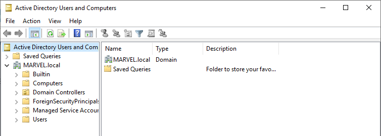

login in windows server
tools-acitve directory Users and computers

inside marvel.local we have a bunch of different orgainistational units(ou's)
right cick on it click new-organisational unit
name it as Groups
take all such groups

out of users accounts and
just keep Guest and Adminsitrator in here
we saw properties of adminsitrator

Domain users is someone who can login to the domain
so we ll crweate couple of domain users and admins to get an idea hiw they look like

set poassword as Password1
and click on password never explires
right click on administrator and click copy to create new user called Tony Stark
his password:password2019!@$
new normal user :Peter Parker
password:Password2
now make a fake sql service acc as domain adminsitrator
they should not be domain administrator acc ever bt probably 70 percent of times its like this only and we can then attack them

no space in USer logon name
passeord:MYpassword123$

many people put such password in their descriptipon
coz they think only they can read them

Click on New Share now
then smb share quick

then hit next

finally thid is what we get
most domain controllers have file share
and we wnated to open up 139 and 445 so that smb is enabled on our domain controller so that we can attack them
now we will create a spn(service principal name)
we are setting upl an attakc for kerbersoting
that is an attack that attacks servoces
so here we wanna attack sql service so we are setting up a spn

now to make sure it is set

entered the command and we can see sqlservice has been set
run group policy managemnt as administrator

cick on create gpo

do this then
in this course we disbale the antivirus coz thats a very long process
and it changes every few months
right cick on Disable Windows Defender
and ckick edit


thus defender off
and once we join oir pc's tp this domain we will have no defender and that s how we wanna attack them